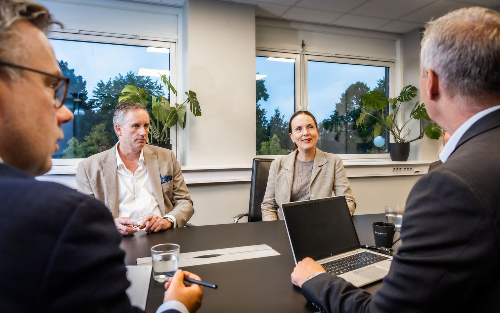
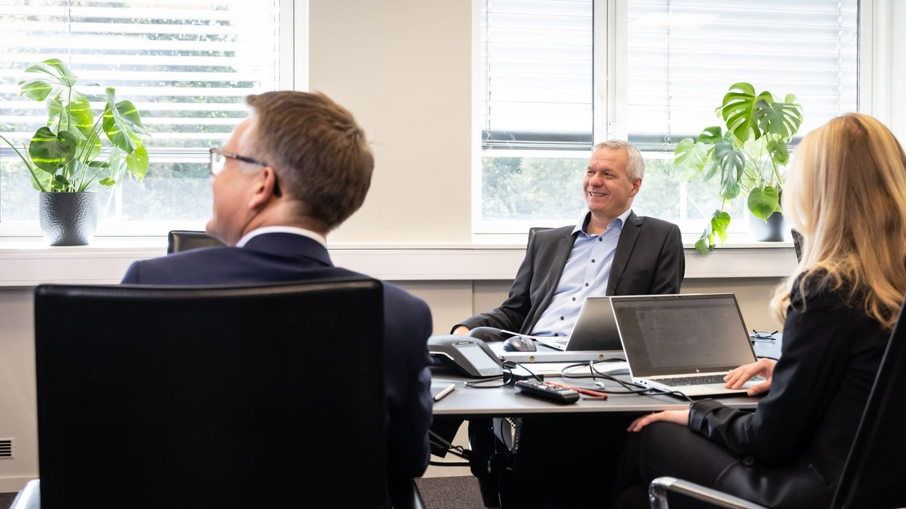

Forside/Search
Executive Search
Lederrekruttering der vi søker bredt, vurderer grundig og innstiller med begrunnelse. Rådgiverne våre er spesialiserte på ulike bransjer, støttet av en teamorientert organisasjon og solide prosesser.
Slik gjør vi det
Fra behov til innstilling
Vi starter med å forstå virksomheten, kulturen og hva rollen faktisk skal løse de neste årene. Deretter kartlegger vi markedet – også kandidater som ikke søker.
- Behovsanalyse sammen med styret eller ledelsen.
- Søk i markedet, ikke bare i søknadsbunken.
- Strukturerte intervjuer og referanseinnhenting.
- Innstilling med skriftlig begrunnelse.

Styre
Styre- og ledelsesrådgivning
Et godt styre er satt sammen, ikke tilfeldig samlet. Vi bistår med sammensetning, styrerollen og vurdering av ledergruppen.
Styrerekruttering
Kartlegging av behov, søk og innstilling til styreverv.
Styreleder
Prosess for å finne riktig styreleder og avklare rolle og mandat.
Ledergruppen
Vurdering og sammensetning av ledergruppen som helhet.

Interim
Interimledelse
Noen ganger kan ikke stillingen stå tom mens den faste lederen rekrutteres. Da setter vi inn en erfaren interimleder som kan drive arbeidet videre i perioden.
- Midlertidig lederkapasitet i en avgrenset periode.
- Klarert mandat og rapportering.
- Overlevering til fast leder når den er på plass.
Trenger dere hjelp i en lederrekruttering?
Ta kontakt, så tar vi en første samtale om rollen og prosessen.